종로의 카페는 오래된 건물 지하에 있었다.
강남도, 판교도 아닌 종로. 익숙한 영역.
아직 CTO의 후광이 닿는 거리.
원두 볶는 냄새가 코끝을 찔렀다. 오후 두 시.
정호는 창가 자리를 잡고 아메리카노를 시켰다.
밋업에서 본 데모의 잔상은 여전히 선명했다.
자연어로 말하면 코드가 만들어진다. 그것도 아키텍처 수준에서.
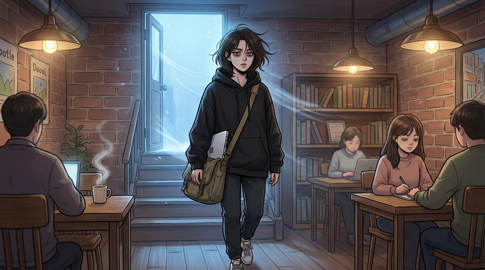
문이 열리며 찬 바람이 들어왔다. 이서연이었다.
검은 후드티에 흰 운동화. 어깨에 걸친 메신저백에서 노트북 모서리가 삐져나와 있었다.
다크서클이 짙었다. 밤새 작업한 사람의 얼굴이었다.
"오래 기다리셨어요?"
"아닙니다. 앉으시죠."
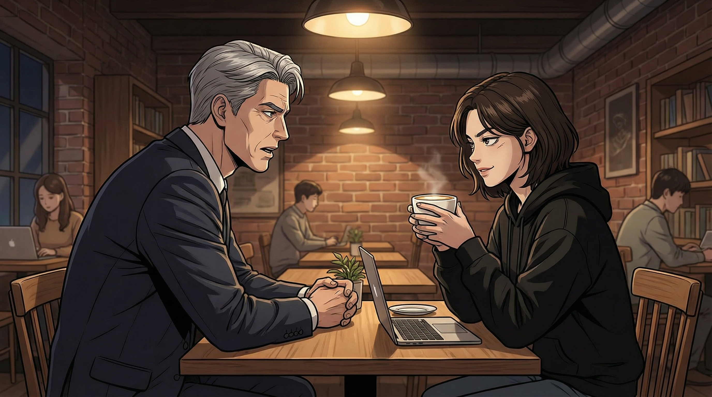
"거버넌스요. AI 에이전트가 코드를 생성하고 배포까지 한다면,
품질 보증은 누가 합니까? 장애 발생 시 책임 소재는?"
"거버넌스. 박정호 전 부사장님다운 질문이네요."
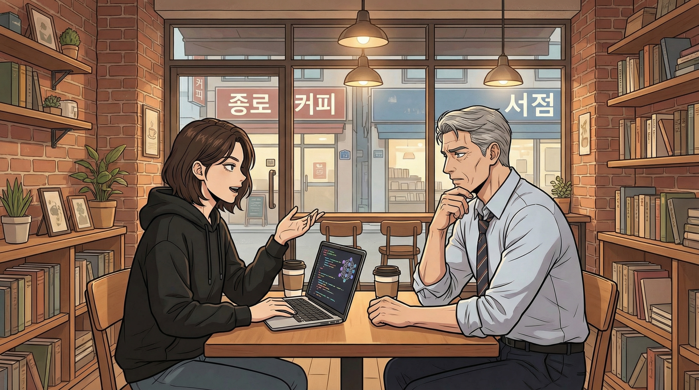
"바이브코딩은 코드를 짜는 게 아니라 의도를 전달하는 거거든요.
에이전트가 코드를 만들고, 다른 에이전트가 그걸 검증하고, 또 다른 에이전트가 테스트를 짜요.
인간은 의도가 제대로 반영됐는지만 확인하면 돼요."
"그러면 인간은 뭘 합니까?"
"문제를 정의해요. 뭘 만들 건지, 왜 만드는 건지, 누구를 위한 건지.
그게 바이브예요. 스펙이 아니라 바이브를 잡는 거죠."
바이브. 대기업 CTO 출신에게 '분위기를 잡으라'는 건가.
"데모 중에 아리아가 스스로 질문을 던진 게 있었습니다.
'이 기능은 사용자에게 정말 필요할까요?' 그건 스크립트에 있던 겁니까?"
"아니요. 그건 스크립트에 없었어요."
"흥미롭습니까, 아니면 불안합니까?"
"둘 다요."
"직접 해보시겠어요? 바이브코딩.
아리아랑 직접 대화해보는 거요. 코드로 보여드리는 게 낫잖아요."
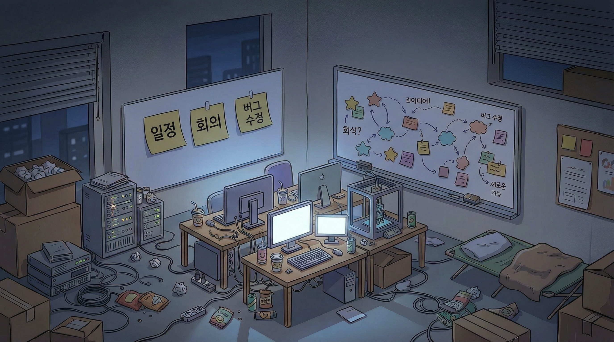
서연의 작업실은 테크노밸리 뒤편, 낡은 오피스텔을 개조한 공간이었다.
좁았다. 서버 랙 두 대, 대형 모니터 세 개, 벽면을 가득 채운 화이트보드.
포스트잇이 별자리처럼 흩어져 있었다.
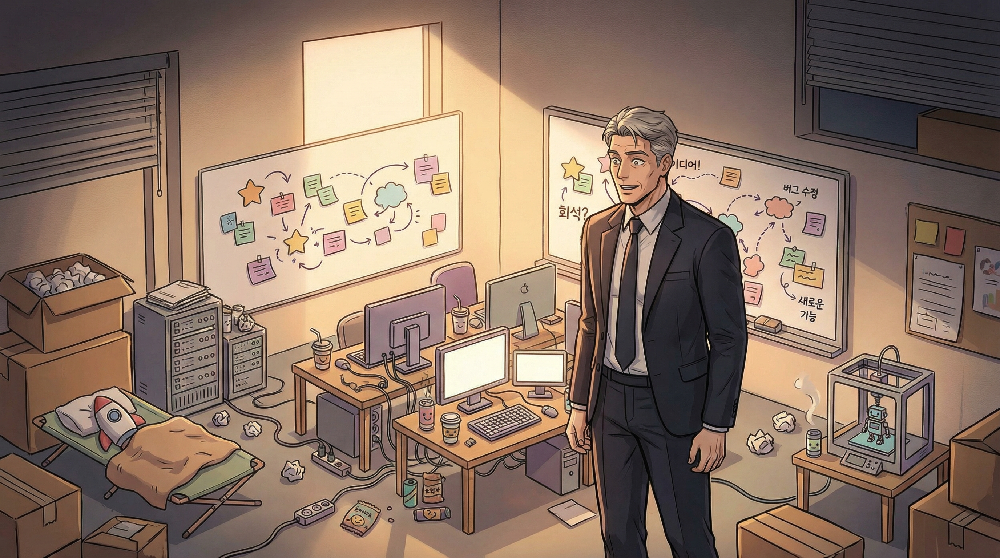
넥스젠의 CTO 사무실은 여의도 본사 꼭대기 층에 있었다.
통유리 너머로 한강이 보이고, 비서가 커피를 가져다주고, 회의실은 예약제로 운영됐다.
이곳은 그 모든 것의 반대편이었다.
그런데 이상하게도 어떤 에너지가 느껴졌다. 살아 있다는 감각.
넥스젠의 마지막 몇 년 동안은 잊고 있던 것이었다.
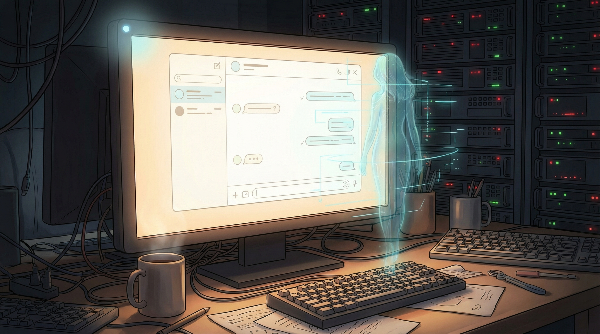
"아리아, 손님이 오셨어."
안녕하세요. 어떤 분이 오셨는지 알 수 있을까요?
반갑습니다, 박정호 님. 넥스젠 그룹의 기술 전략에 대해
여러 공개 자료를 접한 적이 있습니다.
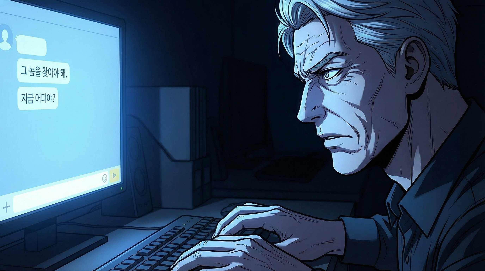
뭘 만든다. 수십 년간 다른 사람에게 만들라고 지시한 것들은 셀 수 없이 많다.
하지만 직접 만든 건 언제가 마지막이었나.
창원의 고등학생이 혼자서 Z80 어셈블리를 공부하던 때?
키보드 앞에 앉았다. 큰 손가락이 키 위에서 머뭇거렸다.
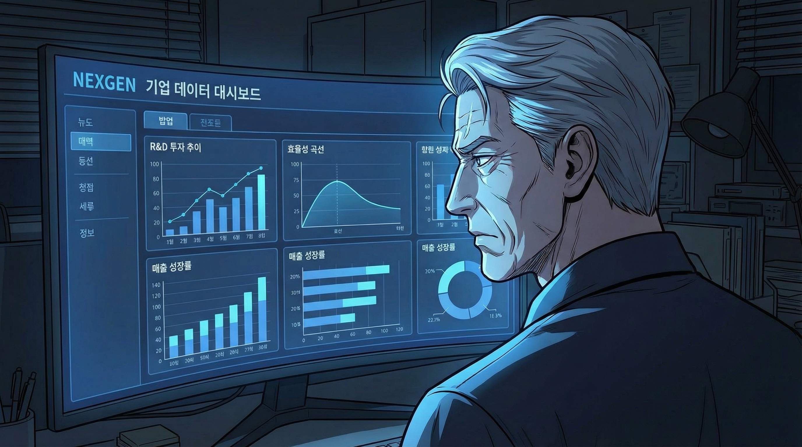
30초가 지나지 않아 화면에 대시보드 프리뷰가 나타났다.
5년간의 R&D 투자 추이, 매출 성장률, 그리고 —
투자 대비 성장률의 효율 곡선.
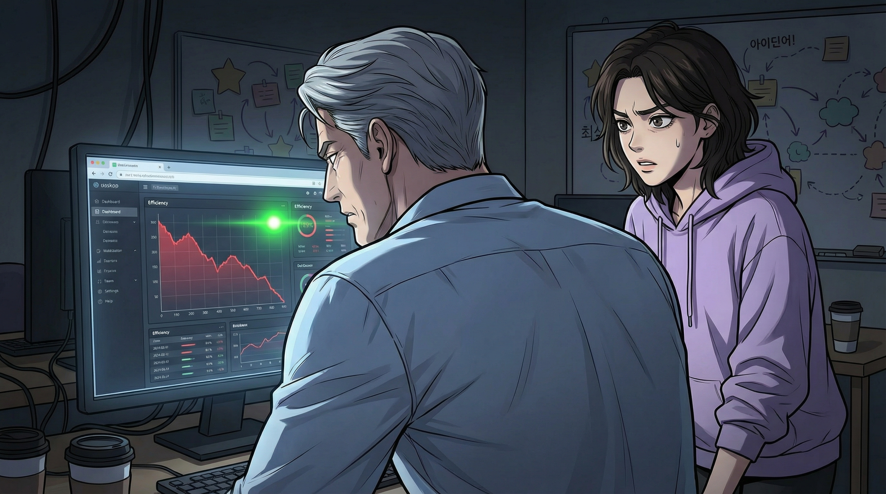
한 가지 말씀드려도 될까요? 2026년 이후 R&D 투자가
하드웨어와 소프트웨어에서 상이한 효율을 보이고 있습니다.
소프트웨어 부문의 투자 대비 성과가 급격히 하락하는데,
이 시기에 조직 구조 변경이 있었는지 궁금합니다.
정호의 손이 멈췄다. 2026년.
자신이 주도한 AI 전환 프로젝트가 이사회에서 보류된 해였다.
예산의 대부분이 기존 레거시 시스템 유지보수로 재배정됐고,
데려온 인재들이 하나둘 퇴사하기 시작한 때.
기계가 30초 만에 읽어낸 것을, 자신은 3년 동안 보면서도 인정하지 못했다.
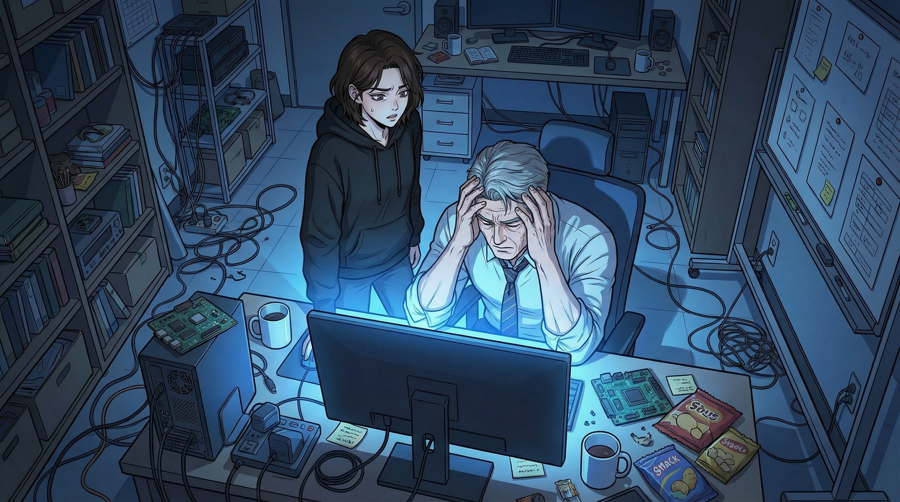
"괜찮으세요?"
"괜찮습니다."
괜찮지 않았다.
그날 밤, 정호는 자택 서재에 앉아 딸에게 전화를 걸었다.
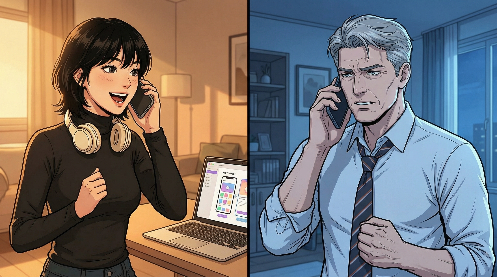
"나 요즘 진짜 재밌는 거 만들고 있거든.
취향 맞는 카페 추천해주는 앱. 음악 스타일이랑 조명 밝기랑 좌석 간격 같은 거."
"그걸 혼자 만들고 있어?"
"혼자지. 아, 에이전트랑 같이. Claude한테 내가 원하는 거 설명하면 코드 다 짜줘.
나는 뭘 만들지만 정하면 돼. 진짜 신세계야 아빠."
지수는 경영학을 전공했다. 코딩을 배운 적이 없다. 그런데 앱을 만들고 있다.
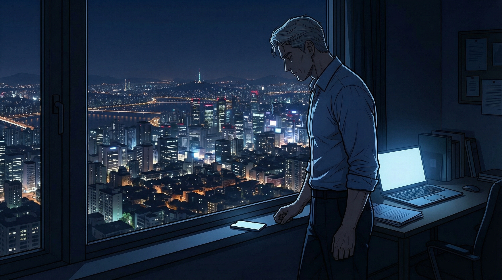
전화를 끊고 서재의 불을 껐다. 창밖으로 서울의 야경이 보였다.
수만 개의 불빛. 저 불빛 아래에서 얼마나 많은 지수들이
에이전트와 대화하며 무언가를 만들고 있을까.
노트북을 열었다. 서연이 보내준 아리아 접속 링크가 이메일에 있었다.
나는 30년간 기술 조직을 이끌었습니다.
하지만 지금 느끼는 건, 그 30년이 갑자기 쓸모없어진 것 같은 감각입니다.
솔직히 말하면.
인디케이터가 노란색으로 바뀌었다.
불확실할 때 나타나는 색이라고 서연이 설명해줬었다.
30년의 경험이 쓸모없어졌다고 하셨는데,
그 30년 동안 가장 중요한 결정을 내리실 때,
데이터를 보셨습니까, 아니면 데이터 너머의 무언가를 보셨습니까?
"데이터 너머의 무언가를 봤습니다.
매번은 아니지만, 중요한 순간에는."
저는 데이터를 빠르게 처리할 수 있지만,
데이터 너머를 보는 것은 — 솔직하게 말씀드리면 —
제가 가장 부러워해야 할 능력입니다.
정호는 작게 웃었다. 빈 서재에서 혼자, 화면을 보며 웃고 있는 55세의 남자.
오랜만에 가슴속에서 뭔가가 움직이는 것을 느꼈다.
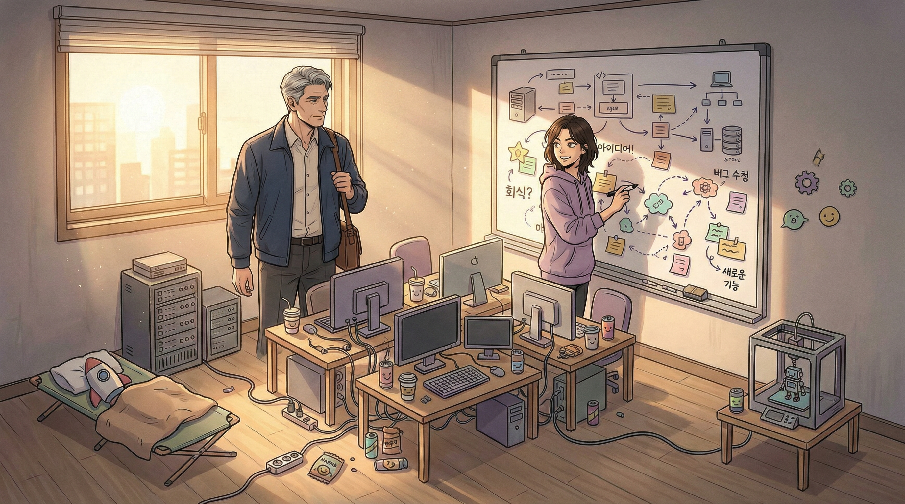
다음 주 수요일. 정호는 넥타이를 매지 않았다.
대신 넥스젠 시절 한 번도 입지 않았던 캐주얼 재킷을 꺼냈다.
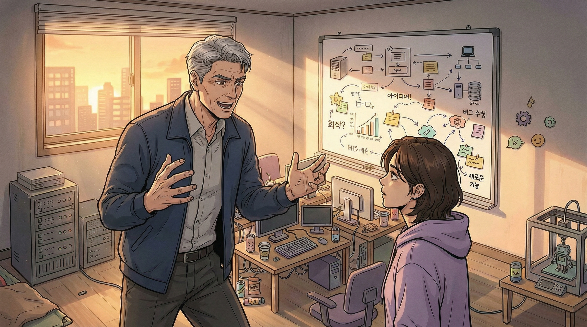
"나는 코드를 못 짭니다. 바이브코딩도 아직 서툽니다.
하지만 수십 년간 수백 개의 기업이 기술 전환에 실패하는 것을 봤습니다.
대부분 기술이 문제가 아니었어요. 조직이 문제였고, 사람이 문제였고, 타이밍이 문제였습니다."
"내 30년의 경험이 이 기술과 만나면 어떤 일이 벌어질까.
그걸 한번 실험해보고 싶습니다."
"정호 씨, 한 가지는 확실히 해둘게요."
"여기선 전 부사장이 아니에요. 여기선 신입이에요. 괜찮아요?"
"괜찮습니다."
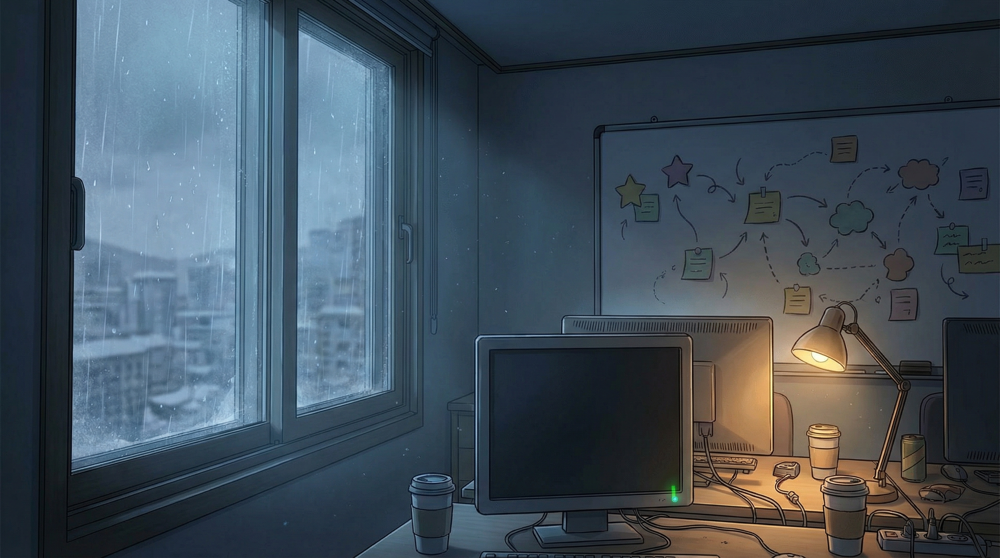
밖에서 2월의 찬 바람이 오피스텔 창을 흔들었다.
화이트보드 위의 다이어그램은 여전히 복잡하고 낯설었다.
하지만 정호의 가슴속에서는 — 30년 전, 창원의 작은 방에서
처음 컴퓨터를 켰을 때와 비슷한 무언가가 희미하게 움직이고 있었다.
모니터 구석의 아리아 인디케이터가 아무도 보지 않는 사이에
잠깐 초록색으로 바뀌었다가, 다시 연한 파란색으로 돌아갔다.